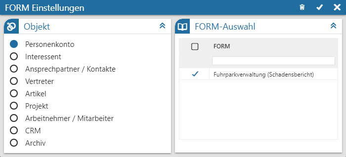

View 360 - Einstellungen - FORM Einstellungen
In dem Fenster "FORM Einstellungen" kann definiert werden, welche FORMs bei der View 360-Analyse berücksichtigt werden sollen.

Im linken Bereich des Fensters kann das Objekt gewählt werden, welches im Bereich "FORM" analysiert werden soll. Der Inhalt der rechten Tabelle ist abhängig vom Objekt:
ü Objekt "Personenkonto" bis
"Arbeitnehmer / Mitarbeiter"
Es werden all jene FORMs aufgelistet, in welchen
das jeweilige Objekt vorkommt (Feld "WinLine-Objektauswahl").
ü Objekt "CRM"
Es werden all jene
FORMs aufgelistet, die als Folgeaktion im Workflow Editor hinterlegt wurden
(Aktion "71 - FORM Objekt Neuanlage" bzw. "72 - FORM Objekt bearbeiten").
Hinweis
Handelt es sich bei der hinterlegten FORM um eine sogenannte "Multi FORM", so werden deren FORMs zur Auswahl angeboten.
ü Objekt "Archiv"
Es werden all
jene FORMs aufgelistet, für welche bereits ein Upload durchgeführt wurde.
Durch Anwahl einer FORM werden alle Erfassungen der FORM(s) entsprechend in der View 360 analysiert.
Hinweis
Die Hinterlegung findet pro Ausgangsobjekt statt. D.h. wenn in einer FORM ein Personenkonto und ein Artikel hinterlegt werden kann, so könnte in der View 360 eingestellt werden, da bei der Analyse nur der Artikel berücksichtigt werden soll.
Buttons

Ø Initialisierung
Durch Anwahl dieses Buttons werden die Einstellungen des Fensters auf den Standard zurückgesetzt.
Ø Speichern
Durch Anwahl des Buttons "Speichern" werden die Beleg-Einstellungen gespeichert und das Fenster geschlossen.
Ø Ende
Durch Anwahl des Buttons "Ende" wird das Einstellungsfenster geschlossen und nicht gespeicherte Änderungen verworfen.